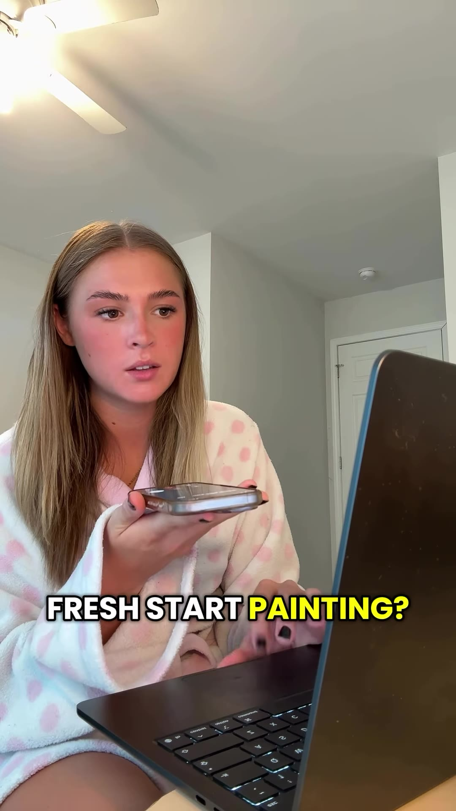
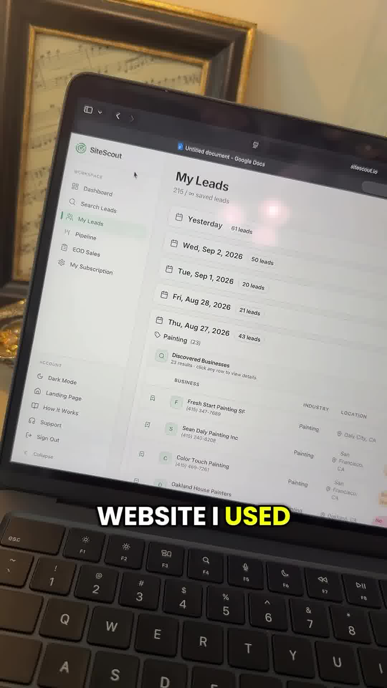
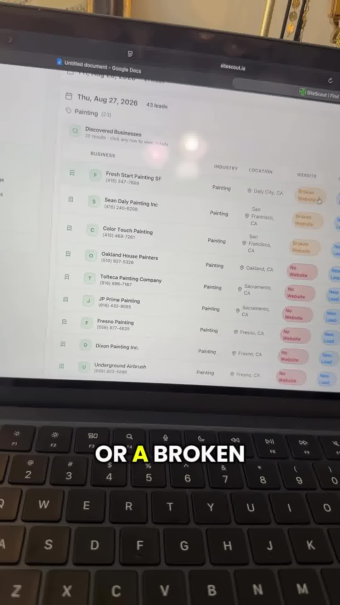

Executive Summary
Most web design agencies and freelance developers fail at client acquisition because their outreach is passive (cold emails that land in spam) or generic ("Do you need a website redesign?"). In contrast, cold calling local trade and service contractors (painters, roofers, plumbers, electricians) who lack an online presence delivers immediate conversion when paired with a "demonstration-first" sales angle.
In this real-world live call recording, indie agency builder Cecelia demonstrates the exact 4-line cold calling script that booked a paid presentation with a local painting company owner within 45 seconds, followed by a rapid 30-minute AI mockup assembly pipeline.
Core Visual Demonstrations



The Exact 4-Line Phone Pitch Script
Step 1: The "Prospective Customer" Opening Hook
"Hi, is this the business owner of [Business Name]?"
[Owner responds: "Yes, it is."]
"Great! I was trying to find your service list and pricing online, but I was really struggling to find an active website. Do you guys currently have one up?"
Why this works: Rather than sounding like an aggressive telemarketer or offshore software agency, you enter the conversation as someone looking for their services. The owner immediately experiences the visceral pain point: a potential paying customer couldn't find their pricing or book an estimate because they lack a web page.
Step 2: The Value-Add Demo Pivot
"Oh, got it! Well in that case I'm glad I called. I'm a local website creator specializing in small trade businesses in the area, and I actually went ahead and drafted a quick demonstration mockup for your business. If you're open to hopping on a quick call later this week, I'd love to show it to you and talk through pricing."
Why this works: Speculative value removes resistance. Business owners decline pitches for hypothetical services, but curiosity drives them to see work that has already been tailored to their exact business name and service offering.
Step 3: Handling the Immediate Availability Objection
When the contractor responds: "Well yeah, if you've already built it, I'm driving right now but can you show me in 30 minutes at 3:00 PM?", lock in the time slot immediately:
"3:00 PM is perfect. I'll send the screen share link to your number right now."
The 30-Minute Rapid Mockup Workflow
Never spend hours designing custom websites before securing client interest. The streamlined workflow relies on just-in-time generation:
- Lead Sourcing: Use Google Maps or lead scrapers (like SiteScale or Outscraper) filtered strictly by:
- Category: Trade services (plumbing, roofing, commercial painting, HVAC).
- Website status:
No WebsiteorHTTP 404. - Review count: > 10 reviews (proves active operational revenue).
- Just-in-Time Generation: Once the call confirms a 30-minute callback window:
- Scrape their Google Business Profile details (business hours, phone number, real review quotes, service areas).
- Prompt a design tool (V0, Lovable, or a pre-configured Tailwind template) with their real branding and photos from their Google profile.
- Deploy to a clean sub-domain (e.g.
freshstart-demo.agency.com) ready to present on the follow-up call.